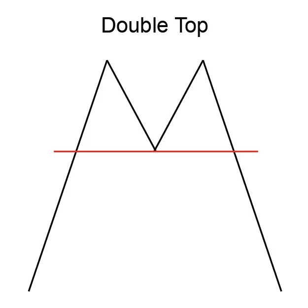
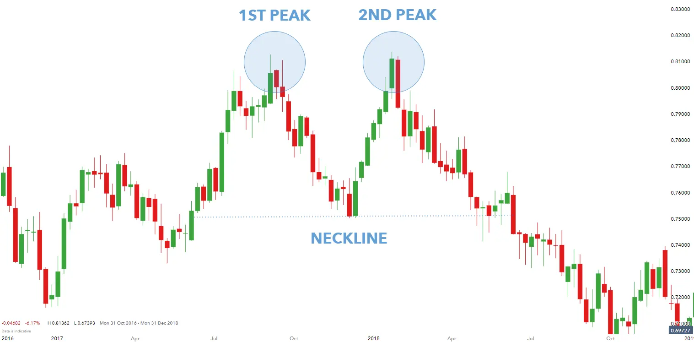

डबल टॉप पैटर्न एक रिवर्सल चार्ट पैटर्न है जो दो समान ऊचाईयों द्वारा गठित होता है, जो एक समर्थन स्तर से जुड़ा होता है।
दूसरा शीर्ष पहले शीर्ष की तुलना में कम होना चाहिए।
डबल टॉप पैटर्न एक संभावित पतन की संकेत देता है और ट्रेडर आमतौर पर इसे ट्रेडिंग के मौके के रूप में उपयोग करते हैं।
पैटर्न में प्रवेश करने के लिए, ट्रेडर आमतौर पर दूसरे शीर्ष के नीचे एक 'ब्रेकआउट' खोजते हैं।
डबल टॉप पैटर्न एक भरोसेमंद रिवर्सल पैटर्न नहीं है, लेकिन यह एक संभावित पतन की संकेत देता है
और ट्रेडर आमतौर पर इसे ट्रेडिंग के मौके के रूप में उपयोग करते हैं।
